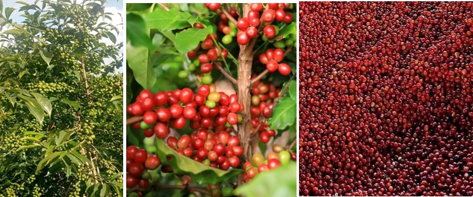

Professional, Transparent, and Sustainable Operations
Fero General Trading PLC provides end-to-end coffee export services, ensuring quality, traceability, and reliable delivery from the highlands of Guji, Ethiopia to international markets.

We source premium Arabica coffee directly from our own farms and trusted smallholder farmers in Guji Zone, Uraga District. Our sourcing model ensures traceability, quality control, and fair pricing.
We manage dry processing, grading, and quality inspection to meet international export standards. Strict quality control guarantees consistency in every shipment.
Our team has experience with international sustainability standards including Organic and other responsible sourcing systems. We support compliance and documentation required for global markets.
We handle export documentation, customs procedures, grading certificates, and shipment coordination to ensure smooth delivery to destination ports.
We prioritize transparent communication, reliable contracts, and long-term partnerships with specialty roasters and international buyers.
Contact us to discuss volumes, grades, and shipping schedules.
Get in Touch